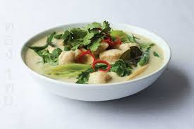

INGREDIENTS
- 1 pound skinless, boneless chicken breast halves - cut into 1 inch cubes
- 1 tablespoon dark soy sauce
- 1 tablespoon all-purpose flour
- 2 tablespoons cooking oil
- 2 tablespoons green curry paste
- 2 green onions with tops, chopped
- 3 cloves garlic, peeled and chopped
- 1 teaspoon fresh ginger, peeled and finely chopped
- 2 cups coconut milk
- 1 tablespoon fish sauce
- 1 tablespoon dark soy sauce
- 2 tablespoons white sugar
- ½ cup cilantro leaves, for garnish

INSTRUCTIONS
- Toss chicken first in 1 tablespoon dark soy sauce, then in the flour, coating pieces evenly.
- Heat the oil in a large skillet over medium high heat.
- Place chicken in the skillet, cook and stir chicken until browned, about 5 minutes. Remove chicken.
- Reduce heat to medium and stir in curry paste.
- Cook for 1 minute until fragrant, then stir in green onions, garlic, and ginger; cook an additional 2 minutes.
- Return chicken to the skillet, stirring to coat with the curry mixture.
- Stir the coconut milk, fish sauce, 1 tablespoon soy sauce, and sugar into the chicken-curry mixture.
- Allow to simmer over medium heat for 20 minutes until the chicken is tender.
- Serve garnished with cilantro leaves.